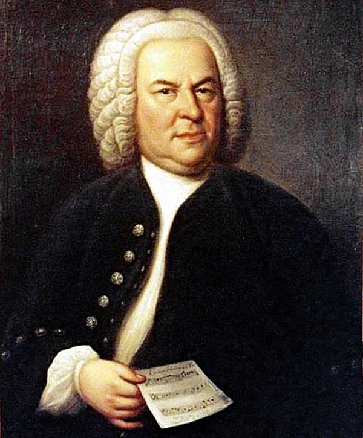

Origens da música: da Pré-História às antigas civilizações
A história da música remonta a milhares de anos, percorrendo diferentes culturas e evoluindo ao longo do tempo. Desde os primórdios da civilização, os seres humanos têm se expressado através da música, utilizando diversos instrumentos e estilos para transmitir emoções, contar histórias e celebrar eventos importantes.
A música na Grécia Antiga: arte e teatro
Os primeiros vestígios da música remontam à Pré-História, quando os seres humanos utilizavam
instrumentos rudimentares, como pedras e ossos, para criar sons e ritmos. Esses primeiros
instrumentos evoluíram para flautas feitas de ossos e tambores feitos de pele animal. A música
desempenhava um papel importante nas práticas religiosas e rituais das antigas civilizações,
como os egípcios e os mesopotâmios.
A música na Grécia Antiga também ocupava um lugar de destaque, sendo considerada uma arte de
grande valor. Filósofos como Pitágoras estudaram a relação entre os sons e os números,
desenvolvendo a base matemática da música. A música grega era frequentemente associada ao
teatro, com o uso de coros e acompanhamentos instrumentais para intensificar as emoções
das peças.
A música na Idade Média: a influência da Igreja Católica
Durante a Idade Média, a música estava fortemente ligada à Igreja Católica. Os monges e os compositores medievais desenvolveram o canto gregoriano, que consistia em melodias monofônicas cantadas em latim durante os serviços religiosos. A música também era utilizada para contar histórias e transmitir conhecimentos nas cortes reais e nos castelos.
O Renascimento: avanços técnicos e polifonia
No Renascimento, a música experimentou um grande avanço. Compositores como Josquin des Prez e Giovanni Pierluigi da Palestrina desenvolveram técnicas polifônicas, em que várias vozes cantavam melodias independentes ao mesmo tempo. O surgimento da imprensa e a disseminação de partituras permitiram que a música fosse compartilhada e aprendida em todo o continente europeu.
A era barroca: mestres e novos instrumentos
A era barroca trouxe consigo a música de grandes mestres, como Johann Sebastian Bach e Antonio Vivaldi. A música barroca era caracterizada por sua ornamentação e complexidade, com o uso de contrapontos elaborados e harmonias ricas. Os compositores barrocos também introduziram novos instrumentos, como o cravo e o violino.
A música romântica: expressões intensas e o surgimento do piano
No século XIX, a música romântica dominou a cena, expressando emoções intensas e dramáticas.
Compositores como Ludwig van Beethoven, Franz Schubert e Frédéric Chopin produziram obras
que transcendiam as fronteiras da música clássica. A invenção do piano deu aos músicos
maior controle sobre a dinâmica e a expressão musical.
O século XX: transformações radicais e novos gêneros
No século XX, a música passou